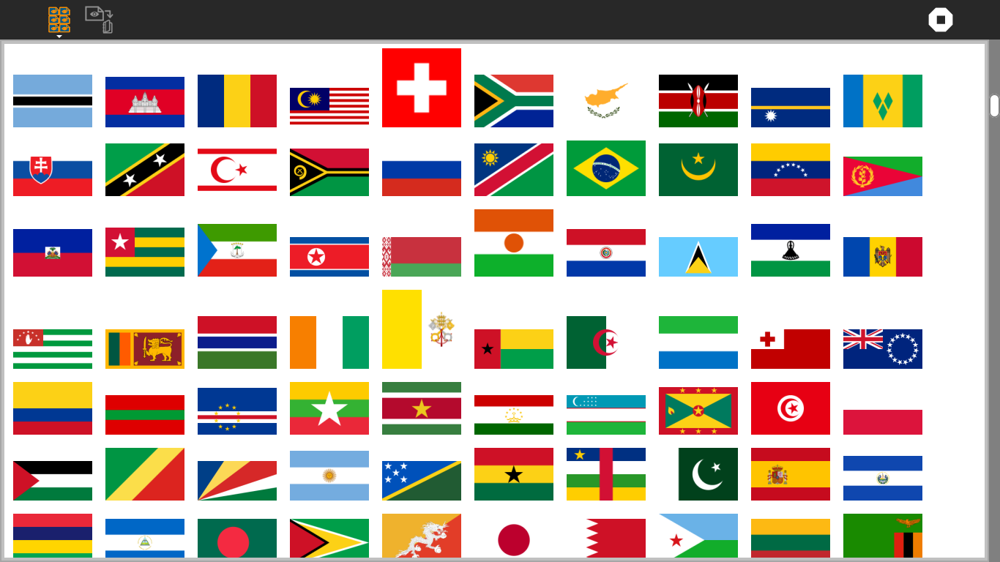

ClipArt¶
About ClipArt¶
ClipArt is a tool for moving artwork found in other Sugar activities into the Sugar Journal.


Where to get ClipArt¶
The ClipArt activity is available for download from the Sugar Activity Library: ClipArt
The source code is available on Github.
Using ClipArt¶
ClipArt scans Sugar activities for artwork (png, svg, jpg, and gif). It presents these artworks in a viewer, allowing the user to select images that are then copied to the Sugar Journal. Once the artwork is in the Sugar Journal, it is available for use in other Sugar activities.
For example, bundled with the Turtle Flags activity are images of national flags. Individual flags can be transferred to the Sugar Journal and used with Write, Fototoons, et al.
The Toolbars¶
from left to right
- Activity-toolbar Button
opens standard Sugar activity toolbar
- Save-image Button
saves the selected image to the Journal
- Stop Button
used to exit the activity
Learning with ClipArt¶
ClipArt is a utility for expanding the set of graphics resources available to other Sugar activities.
Modifying Story¶
Add new images to ClipArt by putting them in the images folder of the activity.
Where to report problems¶
Please report bugs and make feature requests at clipart/issues.
Credits¶
ClipArt was written and is maintained by Walter. He was inspired in part by Laura Ewing.